نفّذ الـAgent الثاني تنفيذًا مستقلًا كاملًا لمسار Micro Bold Modular Design Direction انطلاقًا من فرع main للمستودع المرجعي، دون الاطلاع على أي مخرجات للـAgent الأول، ودون المساس بأي مسار يخصه. شمل التنفيذ ثلاثة اتجاهات بصرية متكافئة (C1 Warm Bold وC2 Confident Bold وC3 Dynamic Modular) مبنية من قالب HTML واحد يضمن تطابق النصوص والأرقام والمقاسات والحالات وبنية المعلومات حرفيًا، بحيث تتمايز الهويات البصرية وحدها — وهو جوهر المقارنة العادلة الذي يفرضه الملف 07.
عبر سبع بوابات داخلية موثقة، أنتج الفريق نموذجًا تفاعليًا واحدًا يعمل دون خادم ولا بيانات حقيقية، مع شريط أدوات معاينة محايد يتيح للمُقيِّم التبديل بين المظهر الفاتح والداكن، وعروض 320/390/430، ونص 200%، والحركة المخفَّضة، والسيناريوهات المالية كاملة (موجبة/سالبة/غير مكتملة/فارغة) وطلب متأخر وفشل حفظ. كل الأرقام من Fixtures الملف 04، وكل مسار غير مكتمل موسوم صراحة داخل الواجهة.
C1 — Warm Bold · «الجريء الدافئ»
تيراكوتا حيوية تقود الهوية وتمنح طاقة البدء، فوق حياد دافئ بلا غرق بيجي، مع ثقة زرقاء منضبطة. حقل البطل الملون بلون الحالة يجيب «كيف وضع مشروعي؟» فورًا. حصل على 4.46 في مصفوفة التقييم — الأقوى في الراحة والقرب من قليلي الخبرة.
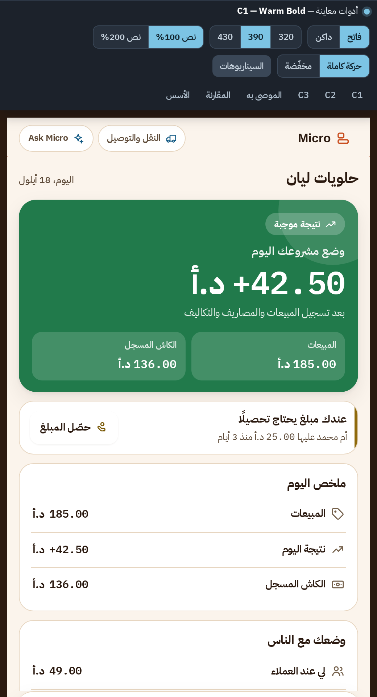
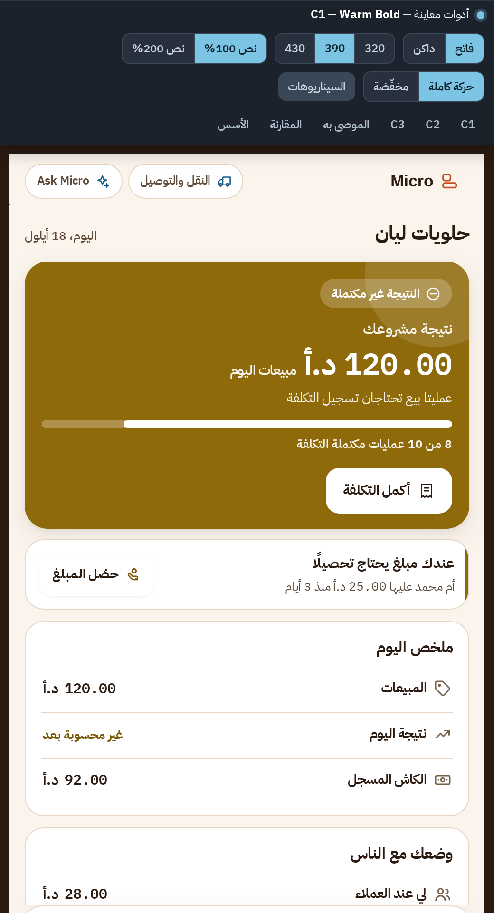
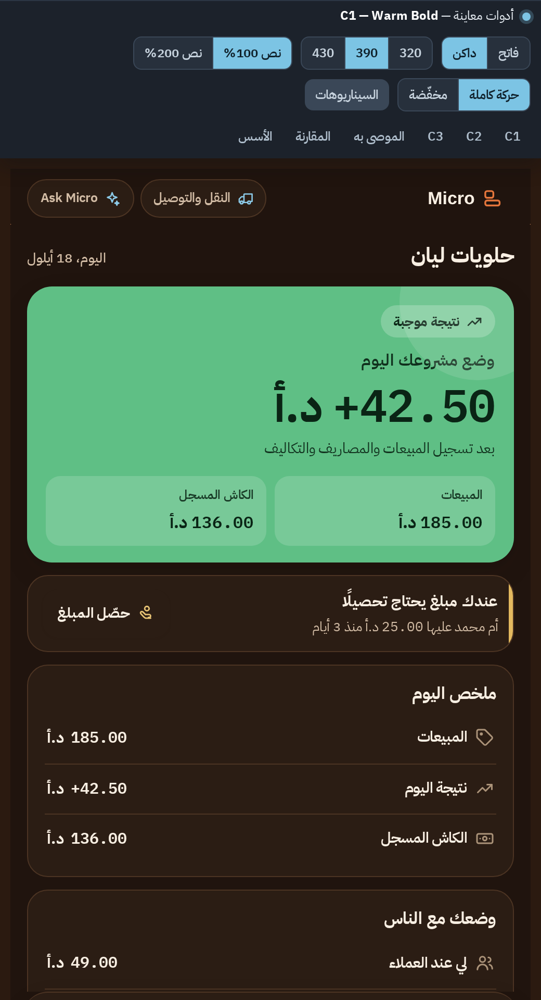
C2 — Confident Bold · «الجريء الواثق»
أزرق-تيل عميق يحمل الثقة والسياق النشط، ولون علامة دافئ يحمل حصرًا طاقة الإنشاء والبدء، على أسطح بيضاء منضبطة ببنية معمارية (شريط حالة + خطوط بداية). حصل على 4.25 — الأعلى ثقة بالأرقام وقابلية للتوسع، والأضعف في حيوية الأب «الجريء».
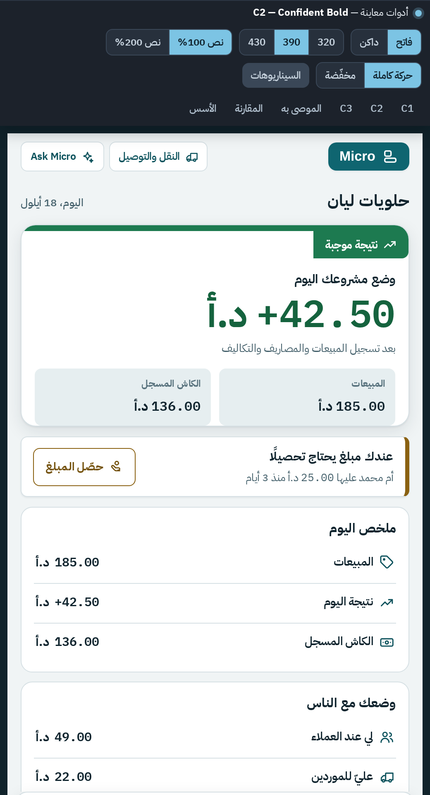
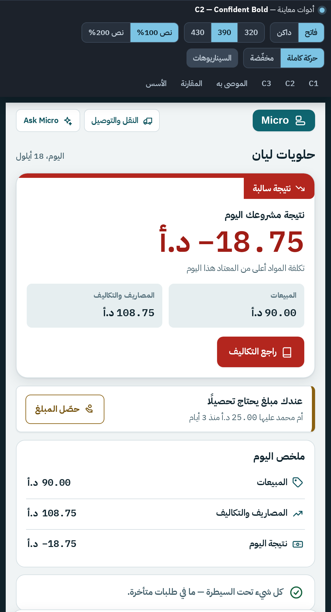
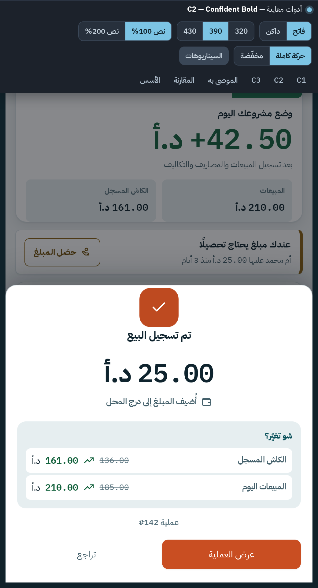
C3 — Dynamic Modular · «الديناميكي المركّب» ★ الموصى به
بنية مكشوطة بحدود حبر وظلال إزاحة للتفاعلي فقط، كتل حالة قوية، ولهجات سياقية منضبطة (تيل للعمل، صدأ للأدوات، أرجواني للسوق)، وخط Noto Kufi للعناوين. واجهة تبدو نشطة قبل أول لمسة. حصل على 4.57 — الأعلى، وهو الأقرب وفاءً للاتجاه الأب «C يقود التكوين».
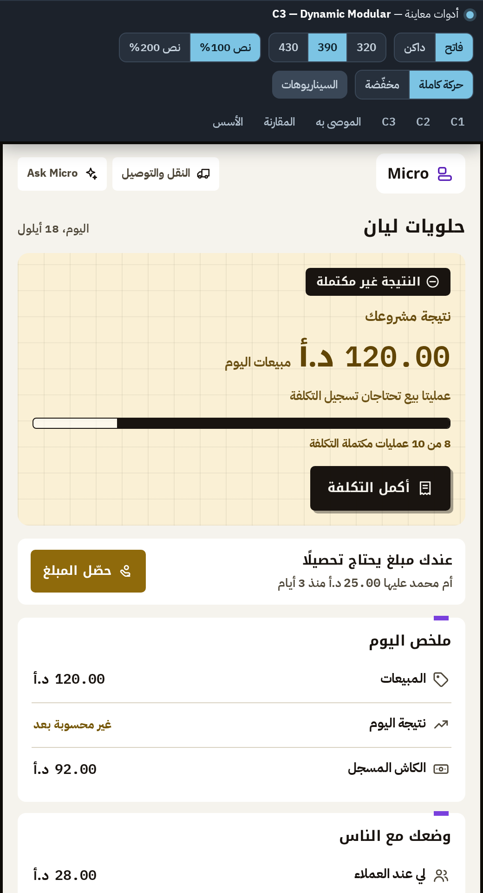
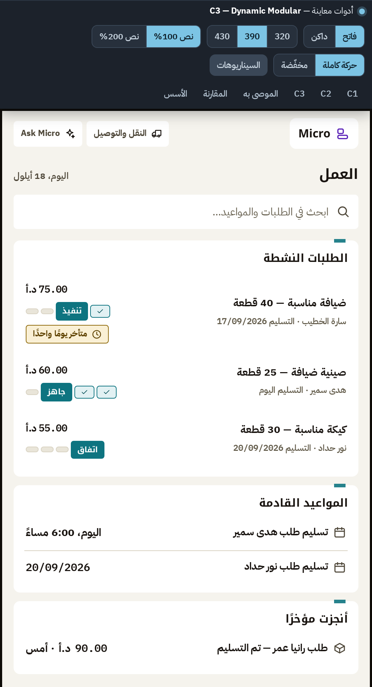
اجتازت الاتجاهات الثلاثة شروط الرفض التسعة (الحقيقة المالية، ظهور الإجراء، سلامة RTL، التباين، فهم عدم الاكتمال، إشارة غير لونية، عدم حجب التنقل). ثم طُبقت المصفوفة الموزونة بدليل من المخرجات لكل درجة — بما فيها معايرتان مستقلتان بنموذج رؤية على الشاشات الحرجة وشاشات المالية خصيصًا.
| المعيار | الوزن | C1 | C2 | C3 |
|---|---|---|---|---|
| الفهم المالي خلال 5 ثوانٍ | 18% | 5 | 4 | 5 |
| اكتشاف الإجراء وسرعته | 14% | 5 | 4.5 | 5 |
| الإحساس بالسيطرة | 12% | 4 | 4 | 4.5 |
| الثقة بالأرقام | 12% | 3.5 | 5 | 4 |
| الحيوية البصرية | 10% | 4 | 4 | 5 |
| الراحة والاستخدام الممتد | 8% | 4.5 | 3.5 | 3.5 |
| قابلية الاستخدام لقليلي الخبرة | 8% | 5 | 4 | 4 |
| هوية Micro المميزة | 7% | 4 | 4 | 5 |
| جودة العربية RTL | 4% | 5 | 5 | 5 |
| الوصول | 4% | 5 | 5 | 5 |
| قابلية التوسع | 3% | 4 | 4.5 | 4.5 |
| المجموع المرجح | — | 4.46 | 4.25 | 4.57 |
لماذا فاز C3؟ يتصدر المعايير الأعلى وزنًا (فهم فوري + اكتشاف إجراء) مع أفضل تتبع بصري للمصدر (معايرة مستقلة: 5/5)، وهو التعبير الأكثر وفاءً للاتجاه الأب المعتمد «Bold Modular Micro — C يقود التكوين». الفارق عن C1 (0.11) ضمن هامش التقدير، لذلك تُوثَّق نقاط ضعفه ومخاطره واحتواؤها قبل أي اعتماد.
طُوّر C3 إلى نظام تصميم مرشح دون دمج هويات: استعارتان مُتحكمتان — دفء C1 (روح A) في لحظات النجاح عبر «الكنكة الدافئة» المتوهجة حول ختم النجاح وفي ومضة إبراز القيمة المتأثرة، وانضباط C2 (روح B) في سياقات القراءة عبر حدود أهدأ (1.5px) وتنفس أوسع للبطاقات. مع تركيز معزز بحلقة بنفسجية وهالة ناعمة.
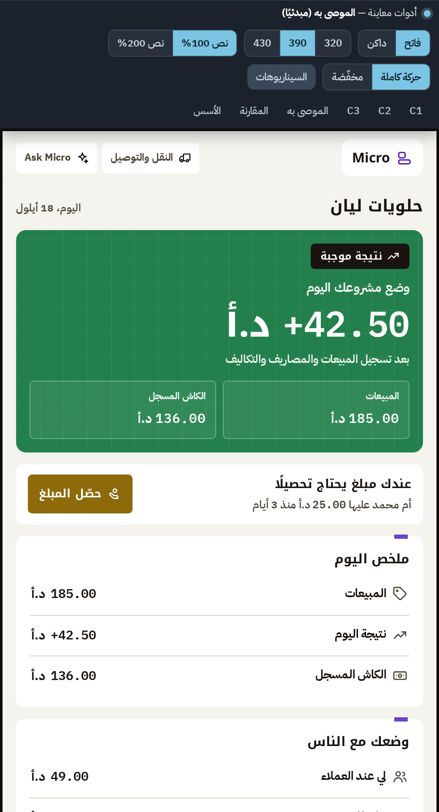
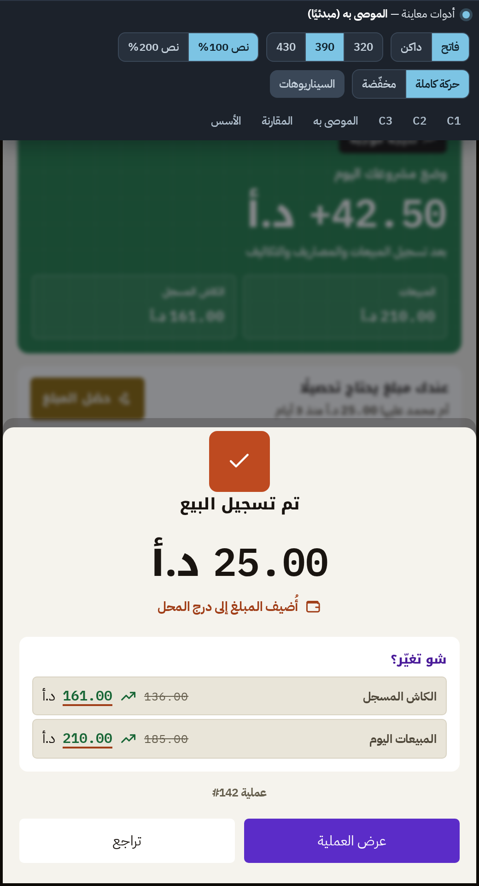
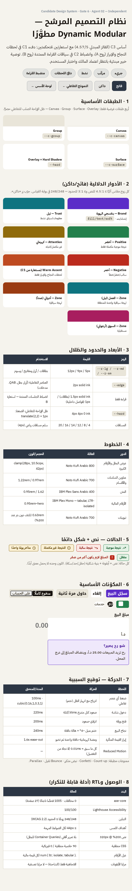
| الاختبار | الأداة | النتيجة |
|---|---|---|
| قياس التباين لكل زوج تشغيلي | سكربت WCAG 2.2 مستقل | 248/248 ≥ الحدود (فاتح+داكن) |
| الفحص الآلي للوصول | axe-core 4 عبر Playwright | 0 مخالفات · 1005 فحصًا ناجحًا · 27 صفحة |
| جودة الوصول الشاملة | Lighthouse 12.8.2 | Accessibility 100/100 ×3 اتجاهات |
| سلامة التخطيط والاستجابة | فحوص هندسية Playwright | 18/18 — بلا تمرير أفقي عند 320 مع نص 200% |
| أهداف اللمس | قياس صناديق العناصر | ≥ 44px لكل الضوابط المهمة |
| الوصول بخمس ثوانٍ | هندسي + مراجعة VLM مستقلة | البطل داخل أول 60% · جواب فوري |
| مراجعة RTL | تدقيق خصائص + معاينة بصرية | 90 خاصية منطقية · 0 فيزيائية · عزل أرقام كامل |
| أخطاء الكونسول | Playwright console capture | صفر عبر كل الصفحات |
أدوات لم تتوفر: Figma MCP (لا يوجد في البيئة — الحل المعتمد رسميًا: HTML تفاعلي). كل سكربت قابل للتكرار مرفق في design-source/build/.
قرارات تنتظر المالك
- لون العلامة: اعتماد البنفسجي المقترح أو العودة للتراكوتا كهوية مع بنية C3.
- Kufi للعناوين كبديل العائلة الواحد المصرح به.
- معجم علامات المناطق (شريط لهجة + تبويب ملون لكل منطقة).
- نتيجة اليوم بعد بيع بلا تكلفة مسجلة — قرار نمذجة مالية.
- المحتوى المساند (أسماء الطلبات والمواعيد الإضافية).
فرضيات تنتظر مستخدمًا حقيقيًا
- فهم علامات المناطق دون شرح.
- إجهاد القراءة: جلسة مالية 15+ دقيقة على الحدود المكشوطة.
- هل تُقرأ فيزياء الضغط «الختمية» كحيوية أم خشونة؟
- Kufi للعناوين عند كبار السن.
- مهام الملف 08 الست: «احكيلي كيف وضع المشروع اليوم…».
القيود المعروفة موثقة بالكامل في accessibility/known-limitations.md: مسارات المصروف/الطلب/التحصيل «عرض مفاهيمي»، الأداء 68–70 في بيئة القياس بخطوط ذاتية الاستضافة، وعدم توفر صلاحية دفع مستقلة للمستودع الأساسي من البيئة (الفرع كامل + bundle قابل للاستعادة + تعليمات دفع دقيقة جاهزة).